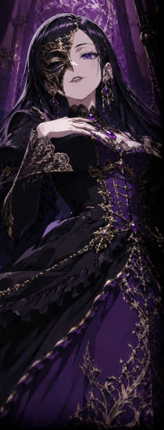

▼闇商会【 スヴァルトアルフ 】＜＜目次へ戻る
下層を中心として全層に影響力を持つギルド・ネットワーク。
違法な武器の製造および販売、盗品ブローカー、地下闘技場における興行、カジノ運営、麻薬売買、娼館斡旋、人身売買……。
スヴァルトアルフの教義は【混沌】である。
元々、下層マフィアはスヴァルトアルフと密な関係を持っていた。 |
スヴァルトアルフは下層の経済を牛耳る巨大なギルドネットワークである。
違法武器製造と販売、盗品ブローカー、地下闘技場における興行、
カジノ運営、麻薬売買、娼館斡旋、人身売買など、
下層における裏稼業にスヴァルトアルフは多かれ少なかれ関わりを持つ。
スヴァルトアルフの教義は【 混沌 】である。
ラグナロク事件でも中立という立場の中、
上層・中層・下層すべてに情報や武器を流し、混乱を煽った。
争いという【 混沌 】を続けることが
利益になり、快楽となり、世界を回すと理解している。
組織として非常に高いクローン技術を有しており、
【 グリゴリシリーズ 】と呼ばれるクローン兵を労働力などとして生み出している。
クローン技術はスヴァルトアルフが最高峰であり、
その独自技術は秘匿とされている。
他のクローン技術と違い非常に短時間で生成されるグリゴリシリーズは
20代程度でその生涯を終える。
又、元々下層マフィアはスヴァルトアルフと密な関係性を持っていた。
しかしテセウスがマフィアを掌握した事でその関係性が分離、
ある種のバランスが保たれる事となる。
それでもスヴァルトアルフはテセウスに迎合するわけでもなく、
対立するわけでもなく、混沌を煽る存在として立場を維持している。
|
 |
マリア・テレジア
|
||||||||||||||||
|
スヴァルトアルフのギルド長。自らも【セクト】という子組織を率いる。
彼女もエクシードであるようだが、その内容について判明している事実は乏しい。
「うふふ、可愛いわね。なにをやっても、所詮戯れよ」 公式サイト原文
女性 年齢不詳
スヴァルトアルフのギルド長。
他者の認識をずらす
「うふふ、可愛いわね。なにをやっても、所詮戯れよ。」 性能：基礎５ｐステータス＋ボス特性１０ｐ |
|||||||||||||||||
| ＜＜目次へ戻る | |||||||||||||||||